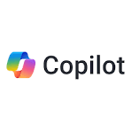

|

|
 |

|

|
|
|
Asistente de inteligencia artificial de OpenAI para conversar, redactar, estudiar, planificar, programar, resolver problemas y analizar imágenes o archivos. Está diseñado para seguir instrucciones dentro de una conversación. |
Asistente de inteligencia artificial de Google que ayuda a escribir, aprender, planificar, resumir información, generar ideas y trabajar con distintos tipos de contenido. Se integra con el ecosistema de Google. |
Asistente digital con inteligencia artificial de Microsoft. Puede responder preguntas, resumir información, apoyar la escritura, generar imágenes y ayudar en tareas cotidianas; además, cuenta con integración en varios productos de Microsoft. |
Herramienta de Google orientada al aprendizaje y la investigación. Permite trabajar con documentos, PDF, enlaces, notas y otras fuentes para obtener resúmenes, respuestas, mapas mentales, materiales de estudio y contenidos basados en las fuentes proporcionadas. |
Herramienta de búsqueda y respuesta asistida por inteligencia artificial. Combina consultas en lenguaje natural con información de la web y suele mostrar fuentes para facilitar la verificación y ampliar la investigación. |
Claude es una familia de modelos de lenguaje grandes (LLM) patentados, así como un asistente de IA y otras herramientas de IA impulsadas por esos modelos, desarrollados por Anthropic. |
|
ChatGPT |
Google Gemini |
Microsoft Copilot |
Gemini Notebook (antes NotebookLM) |
Perplexity |
Claude |